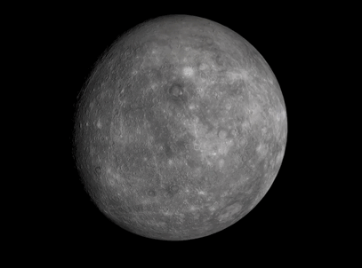

Mercur este planeta cea mai apropiată de Soare, înconjurându-l o dată la fiecare 88 zile pământene. Luminozitatea sa variază între -2,0 și 5,5 în magnitudine aparentă, dar nu este ușor de văzut fiindcă cea mai mare separare unghiulară (cea mai mare elongație) față de Soare este de doar 28,3°, însemnând că se poate vedea doar imediat după apusul Soarelui. În perioada 1974 - 1975, Mercur a fost studiată cu ajutorul sondei Mariner 10, care a cartografiat doar 40 - 45 % din suprafața planetei. Începând din 2011, sonda spațială MESSENGER orbitează în jurul planetei pentru a studia compoziția chimică, geologia și câmpul magnetic.
În baza datelor furnizate de MESSENGER, Paul K. Byrne și Christian Klimczak (Carnegie Institution for Science – Washington) au realizat o hartă detaliată care arată că Mercur s-a contractat substanțial pe măsură ce s-a răcit. Conform cercetătorilor, Mercur și-a micșorat raza cu până la 7 km, față de maxim 1 – 2 km cum se credea până acum, în prezent planeta având o rază de 2440 km.
Fizic, planeta Mercur este similară în aparență cu Luna, fiind împânzită de cratere. Ea nu are sateliți naturali și nici o atmosferă mai densă. Planeta are un nucleu mare de fier care generează un câmp magnetic de 100 de ori mai slab decât cel al Pământului. Temperatura la suprafața planetei Mercur variază de la aproximativ 90 K până la 700 K, punctul subsolar fiind cel mai fierbinte și fundul craterelor de lângă poli fiind punctele cele mai reci.
Observații înregistrate ale planetei Mercur datează din vremea sumerienilor, în al treilea mileniu înaintea erei noastre. Romanii au numit planeta după zeul mesager Mercur (în Grecia Hermes, în Babilonia Nabu), probabil datorită mișcării aparent rapide. pe cerul crepuscular. Simbolul astronomic pentru Mercur este o versiune stilizată a capului zeului având o pălărie cu aripi, pe un caduceu, un antic simbol astrologic. Înainte de secolul 5 î.Hr. astronomii greci credeau că planeta e formată din două obiecte separate: una vizibilă doar la răsărit și cealaltă vizibilă doar la apus. În India planeta a fost denumită Budha, dupa fiul Chandrei (al Lunii). Culturile chineză, coreană, japoneză și vietnameză fac referiri la planeta Mercur sub denumirea de „Steaua apei”, denumire bazată pe cele Cinci Elemente.
|
Date:
|
 |